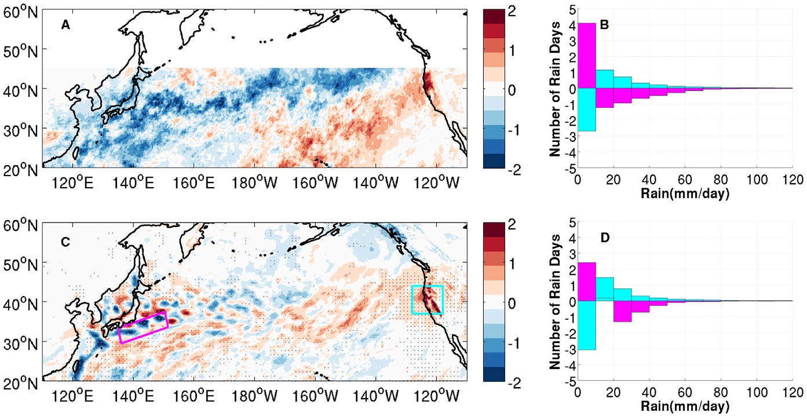
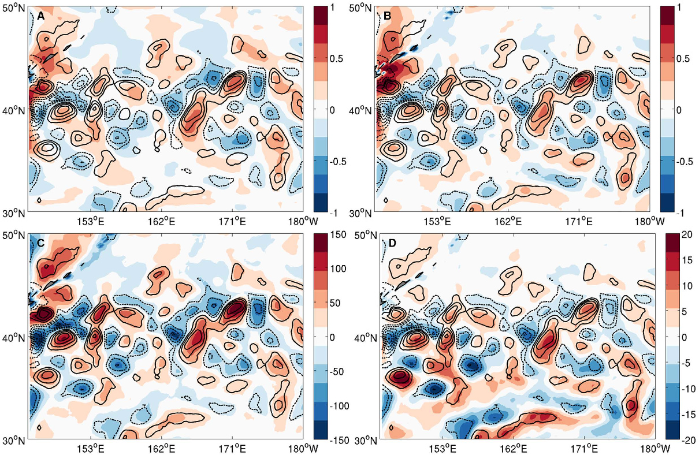
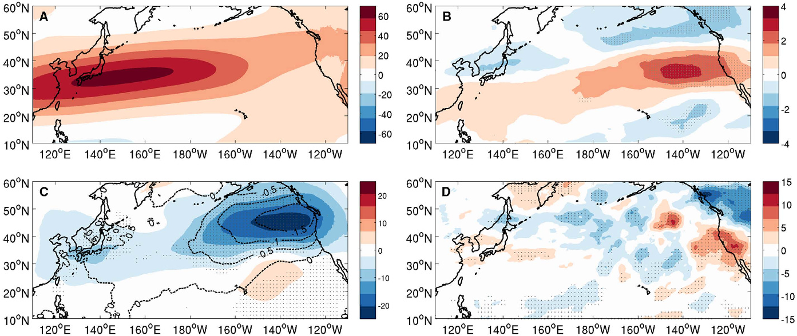
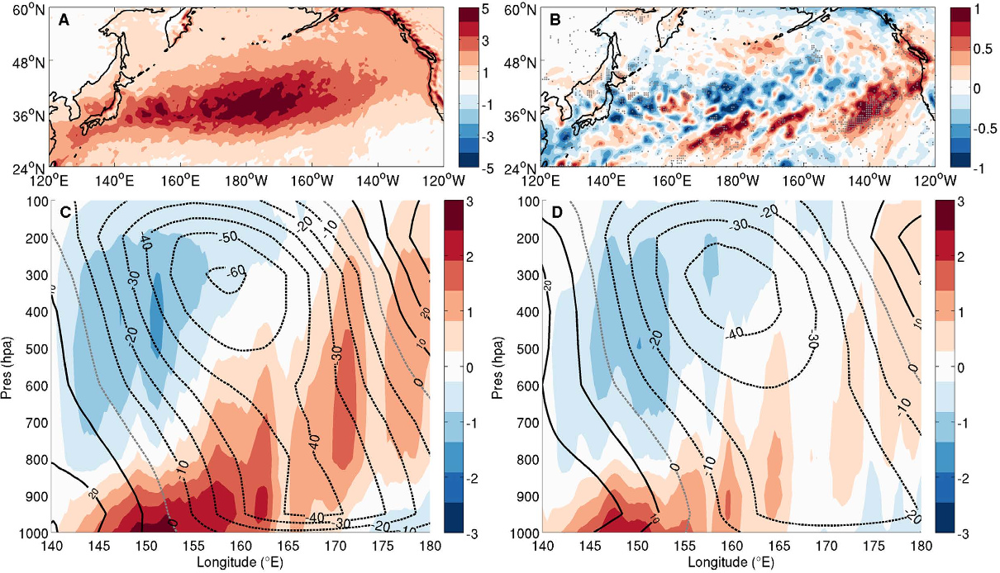

摘要Abstract
对地表风和海表温度（SST）的高分辨率卫星测量揭示，在黑潮和湾流等涡旋活跃海区，中尺度海洋涡旋与近地面大气流动之间存在强耦合，这凸显了中尺度海洋特征在强迫大气行星边界层（PBL）方面的重要性。High-resolution satellite measurements of surface winds and sea-surface temperature (SST) reveal strong coupling between meso-scale ocean eddies and near-surface atmospheric flow over eddy-rich oceanic regions, such as the Kuroshio and Gulf Stream, highlighting the importance of meso-scale oceanic features in forcing the atmospheric planetary boundary layer (PBL).本文给出高分辨率区域气候模拟结果，并以观测分析加以支持，表明主要局限于黑潮—亲潮汇合区（KOCR）的中尺度 SST 变率还能够对美国北太平洋沿岸冬季降水变率产生显著的遥远影响。Here, we present high-resolution regional climate modeling results, supported by observational analyses, demonstrating that meso-scale SST variability, largely confined in the Kuroshio-Oyashio confluence region (KOCR), can further exert a significant distant influence on winter rainfall variability along the U.S. Northern Pacific coast.中尺度 SST 异常的存在增强了潜热能向瞬变涡旋能量的非绝热转换，通过湿斜压不稳定加强冬季气旋生成，进而在下游形成伴随降水减少的等效正压反气旋异常。The presence of meso-scale SST anomalies enhances the diabatic conversion of latent heat energy to transient eddy energy, intensifying winter cyclogenesis via moist baroclinic instability, which in turn leads to an equivalent barotropic downstream anticyclone anomaly with reduced rainfall.这一发现表明，通过改进预报模式和气候模式对海洋涡旋—大气相互作用的刻画，有望改善对温带冬季气旋和风暴系统的预报，以及对其未来气候变化响应的预估；这些系统已知会造成重大社会和经济影响。The finding points to the potential of improving forecasts of extratropical winter cyclones and storm systems and projections of their response to future climate change, which are known to have major social and economic impacts, by improving the representation of ocean eddy–atmosphere interaction in forecast and climate models.
引言Introduction
黑潮延伸体和湾流延伸体等中纬度海洋锋，通过影响对流层低层斜压性，对大气风暴路径起到锚定作用 1, 2。Midlatitude oceanic fronts, such as the Kuroshio and Gulf Stream extension, play an anchoring role for atmospheric storm tracks through their effect on low-level baroclinicity in the troposphere 1, 2 .然而，这些海洋锋的变率究竟能在多大程度上影响大气风暴路径和天气型，一直是争论激烈的话题。However, the extent to which the variability of these oceanic fronts can have an impact on atmospheric storm tracks and weather patterns has been a topic of vigorous debate.一些早期研究指出，与大气内部动力学产生的变率相比，中纬度 SST 强迫的大气响应通常较弱，因而对大尺度中纬度 SST 异常强迫大气的有效性提出质疑 3。Some early studies indicate that midlatitude SST-forced atmospheric response is generally weak compared to variability generated by atmospheric internal dynamics, casting doubt on the effectiveness of large-scale midlatitude SST anomalies forcing the atmosphere 3 .较新的研究把重点放在海洋锋沿线强 SST 梯度对大气的作用 4, 5, 6, 7，并发现与海洋锋位移相关的 SST 异常可能引起大气风暴路径变化 8, 9, 10, 11。More recent studies focus on the effect of strong SST gradients along oceanic fronts on the atmosphere 4, 5, 6, 7 , finding that SST anomalies associated with shifts of the oceanic fronts may cause changes in atmospheric storm tracks 8, 9, 10, 11 .新近研究也开始探讨锋区海洋涡旋在影响局地降水和其他天气变量方面的作用，揭示暖中尺度海洋涡旋会伴随降水显著增加 12，并会诱发中尺度风辐合 13。Emerging research has also begun to explore the role of ocean eddies along the fronts in affecting local rainfall and other weather variables, revealing a significant increase of rainfall paired with warm meso-scale ocean eddies 12 and a meso-scale wind convergence induced by warm eddies 13 .不过，现有研究中很少有工作 14, 15 明确讨论与海洋涡旋有关的中尺度 SST 变率在遥远影响大气风暴路径和冬季降水变率方面的潜在作用，尽管已有充分证据表明，海洋锋沿线的高能涡旋可产生从季节到年代际时间尺度变化的强中尺度 SST 异常 16。Few of the existing studies 14, 15 , however, explicitly address the potential role of meso-scale SST variability associated with ocean eddies in remotely influencing atmospheric storm track and winter rainfall variability, even though it has been well established that energetic eddies along the oceanic fronts can generate strong meso-scale SST anomalies, varying on seasonal-to-decadal time scales 16 .
结果Results
观测中存在引人深思的证据，指向黑潮中尺度 SST 变率与美国北太平洋沿岸冬季降水之间的联系。There is thought-provoking observational evidence pointing to a relationship between Kuroshio meso-scale SST variability and winter precipitation along the U.S. Northern Pacific coast.图 1A 给出了五个黑潮涡旋活动较弱年份［2002—2005、2010］与另外五个涡旋活动较强年份［2000、2006—2009］之间的冬季平均降水合成差异，以及相应的逐日降水概率密度函数（PDF）分布差异。Figure 1A shows the difference of winter season mean rainfall composite, along with the corresponding daily rainfall probability density function (PDF) distribution difference, between five years [2002–2005,2010] when Kuroshio eddy activity was subdued and another five years [2000, 2006–2009] when the eddy activity was enhanced.降水和海洋涡旋统计分别源自热带测雨任务（TRMM3B42）的高分辨率降水资料 17，以及 TOPEX/Poseidon 和其他海洋表面地形测量任务的海表高度（SSH）资料 18。The rainfall and ocean eddy statistics were derived from the high-resolution rainfall data from the Tropical Rainfall Measuring Mission (TRMM3B42) 17 and sea-surface height (SSH) data from the TOPEX/Poseidon and other ocean surface topography measurement missions 18 , respectively.涡旋活跃年和不活跃年的选择沿用近期研究 19；该研究将这些年份分别识别为黑潮不稳定期和稳定期。The selection of the eddy active and inactive years follows a recent study 19 that identified these years as Kuroshio unstable and stable periods.可以清楚看到，较弱的黑潮涡旋活动对应于黑潮延伸区冬季降水减少、美国北太平洋沿岸冬季降水增加，反之亦然。It is evident that a weak Kuroshio eddy activity corresponds to a reduced (enhanced) winter precipitation along the Kuroshio extension (the U.S. Northern Pacific coast) and vice versa.除冬季平均降水变化外，逐日降水 PDF 分布也存在显著差异：涡旋活跃（不活跃）时，黑潮沿线强降水事件出现频率增加（减少），而北太平洋东部的变化相反（图 1B）。Along with the change in the winter mean precipitation, there is a marked difference in the daily rainfall PDF distribution with increased (decreased) occurrence of heavy rain events along the Kuroshio when eddies are active (inactive), but the opposite over the eastern North Pacific ( Fig. 1B ).观测到的中尺度 SST 与降水变率之间的关系十分耐人寻味，但由于它建立在高分辨率 TRMM 与 SSH 资料重叠期的一段短记录之上，其稳健性和因果性仍需进一步审视。This observed relationship between meso-scale SST and precipitation variability is intriguing, but its robustness and causality need further scrutiny, because it is based on a short record when the high-resolution TRMM and SSH data overlap.然而，目前缺少足够长的高分辨率观测记录，能够解析海洋中尺度涡旋及其对大气的影响，因此很难用观测验证这一发现。However, the lack of long records of high-resolution observations capable of resolving ocean meso-scale eddies and their impact on the atmosphere makes it challenging to observationally validate the finding.基于这一原因，我们转而采用高分辨率区域气候模式模拟。For this reason, we turn to high-resolution regional climate model simulations.

点击或轻触图片打开 1393 × 718 原图，可缩放查看坐标、色标和图例。Tap or click to open the 1393 × 718 original; zoom to inspect axes, color bars, and legends.fb75b913bb02a1b1…我们使用天气研究与预报（WRF）模式设计了一组水平分辨率为 27 km、覆盖整个北太平洋区域的孪生数值试验。We designed a set of twin numerical experiments using the Weather Research and Forecasting (WRF) model with 27 km horizontal resolution configured for the entire North Pacific sector.每组孪生试验均包含 10 个集合成员，采用空间分辨率为 0.09° 的微波—红外最优插值（MW-IR）逐日 SST 强迫，模拟时段为 2007 年 10 月 1 日至 2008 年 3 月 31 日；该时期涡旋活动强，但厄尔尼诺—南方涛动（ENSO）和太平洋年代际振荡（PDO）均接近中性位相（方法）。Each of the twin experiments consists of an ensemble of 10 simulations forced with MicroWave InfradRed Optimal Interpolated (MW-IR) daily SST at 0.09° spatial resolution from October 1, 2007 to March 31, 2008, a period that was marked by strong eddy activity but with near neutral phase of El Niño-Southern Oscillation (ENSO) and of Pacific Decadal Oscillation (PDO) ( Methods ).两组试验唯一的区别是：控制模拟（CTRL）使用 MW-IR SST，而中尺度涡旋滤除模拟（MEFS）使用经二维空间 Loess 滤波器 20 低通滤波的 MW-IR SST；该滤波器截止波长为 15° × 5°，用于去除中尺度 SST 变率（图 S1）。The only difference between the twin experiments is that in control simulations (CTRL) the MW-IR SST was used, whereas in meso-scale eddy filtered simulations (MEFS) lowpass filtered MW-IR SST with a 2-D spatial Loess filter 20 of a 15° × 5° cut-off wavelength was used to remove meso-scale SST variability ( Fig. S1 ).因此，两组试验之间的大气响应差异可归因于中尺度 SST 变率，从而使我们能够评估海洋涡旋对北太平洋冬季风暴路径变率的影响。As such, the difference in atmospheric response between the two experiments can be attributed to meso-scale SST variability, allowing us to assess the impact of ocean eddies on winter-season storm track variability over the North Pacific.需要指出的是，在集合规模相同的情况下，地区模式方法比全球模式方法具有更高的信噪比，因为所有集合成员使用了相同的侧边界条件。We note that, given the same ensemble size, the regional modeling approach improves signal-to-noise ratio over global modeling approach because identical lateral boundary conditions were used for all the ensemble members.本文未讨论结果对不同滤波尺度的敏感性，仍需进一步研究。The sensitivity of the results to different filter scales is not discussed here and needs to be further investigated.
先前对高分辨率卫星观测的分析表明，中尺度 SST 异常可在近地面大气场中强迫出结构清晰的局地响应 21, 22, 23。Previous analyses of high-resolution satellite observations show that meso-scale SST anomalies can force a well-defined local response in near-surface atmospheric fields 21, 22, 23 .图 2A 显示，2007/2008 年冬季 KOCR 高分辨率卫星资料反演的冬季平均中尺度 SST 与地表风之间存在显著对应关系。Figure 2A reveals a striking correspondence between the winter-mean meso-scale SST and surface winds derived from high-resolution satellite data in the KOCR during 2007/8 winter.CTRL 以极高保真度再现了这种观测到的中尺度 SST—地表风关系（图 2B），使我们有信心认为 WRF 能够如实表示 KOCR 的锋面和中尺度海气相互作用。This observed meso-scale SST and surface wind relationship is reproduced ( Fig. 2B ) with remarkably high fidelity in CTRL, giving the confidence that WRF is capable of faithfully representing frontal and meso-scale air-sea interactions in the KOCR.此外，模式模拟出大气 PBL 高度（图 2C）和对流有效位能（CAPE；图 2D）对中尺度 SST 强迫的高度一致响应；对流降水和海气湍流热通量（未示出）也表现出类似响应，说明中尺度 SST 的影响贯穿整个 PBL 并延伸至其上方。Furthermore, the model simulates a highly cohesive response to the meso-scale SST forcing in atmospheric PBL height ( Fig. 2C ) and convective available potential energy (CAPE) ( Fig. 2D ), as well as convective rainfall and air-sea turbulent heat fluxes (not shown), suggesting that the influence of the meso-scale SST extends throughout the entire PBL and beyond.这些结果自然引出一个问题：黑潮涡旋能否对太平洋风暴路径以及更下游的天气型产生远距离影响？A natural question arises from these results: Can these Kuroshio eddies have far-reaching impacts on the Pacific storm track and weather patterns further downstream?

点击或轻触图片打开 1210 × 788 原图，可缩放查看经纬度、色标和等值线。Tap or click to open the 1210 × 788 original; zoom to inspect coordinates, color bars, and contours.4b1ddd824c129a7d…对 CTRL 与 MEFS 的模拟冬季降水进行比较可清楚看到，在没有中尺度 SST 的情况下（即 MEFS），模拟冬季平均降水不仅沿黑潮上游分支显著减少，而且在北太平洋东部、尤其美国北太平洋沿岸增强（图 1C）。A comparison of simulated winter precipitation between CTRL and MEFS clearly shows that in the absence of meso-scale SST (i.e., MEFS), the simulated winter-mean rainfall exhibits not only a significant decrease along the upper branch of the Kuroshio, but also enhanced winter precipitation over the eastern North Pacific, particularly along the U.S. Northern Pacific coast ( Fig. 1C ).事实上，MEFS 与 CTRL 之间的模拟降水差异型，与观测到的黑潮稳定期和不稳定期之间的降水差异（图 1A）具有可辨识的相似性。In fact, the simulated precipitation difference pattern between MEFS and CTRL bears a discernible resemblance to the observed precipitation difference between the Kuroshio stable and unstable period ( Fig. 1A ).此外，在存在中尺度 SST 时，模拟逐日降水 PDF 的变化与观测一致：黑潮沿线（美国北太平洋沿岸）逐日强降水事件的出现频率增加（减少）（图 1D）。Furthermore, the PDFs of simulated daily rainfall display observationally consistent changes with increased (decreased) occurrence of daily heavy rain events along the Kuroshio (the U.S. Northern Pacific coast) in the presence of the meso-scale SST ( Fig. 1D ).MEFS 中因缺少海洋涡旋而导致的冬季降水减少量，占 CTRL 冬季平均总降水的 20%—25%，与该区季节降水变化幅度相当。The decrease in winter rainfall caused by the absence of oceanic eddies in MEFS amounts to 20–25% of the total winter mean rainfall in CTRL, which is comparable to the seasonal rainfall variation in this region.进一步把模拟降水分为对流性降水和大尺度（非对流性）降水后可见，黑潮沿线的降水减少主要由对流性降水变化造成，而东部海盆的降水增加主要源于非对流性降水变化（图 S2）。A further separation of the simulated rainfall into convective and large-scale (non-convective) rain demonstrates that the rainfall decrease along the Kuroshio is primarily caused by changes in convective rainfall, while the rainfall increase over the eastern basin is largely due to non-convective rainfall changes ( Fig. S2 ).地形效应可能促成美国西海岸非对流性降水的剧烈变化。Orographic effects may contribute to the dramatic change of non-convective rainfall along the west coast of US.
对孪生试验间高层大气环流变化的分析表明，急流和风暴路径对中尺度 SST 强迫作出一致响应。Analyses of changes in upper atmospheric circulation between the twin experiments reveal a consistent jet stream and storm track response to meso-scale SST forcing.与 CTRL 相比，在去除了中尺度 SST 变率的 MEFS 中，模拟的高层急流在东部海盆向赤道方向偏移（图 3A、B）。In MEFS where meso-scale SST variability is removed, the simulated jet stream in the upper atmosphere shifts equatorward in the eastern basin compared to CTRL ( Fig. 3A,B ).这一偏移是该区形成的异常等效正压环流（图 3C）的一部分，并对应于高层风暴路径活动的偶极型响应：急流以南（以北）的风暴活动增加（减少）（图 3D）。This shift is a part of an anomalous equivalent barotropic circulation that develops in the region ( Fig. 3C ) and corresponds to a dipole-like response in upper level storm track activity with an increase (decrease) storm activity to the south (north) of the jet stream ( Fig. 3D ).近期一项高分辨率模拟研究也指出了类似的等效正压响应，并强调高频 SST 强迫在驱动大尺度大气响应中的重要性 15。A similar equivalent barotropic response was also noted in a recent high-resolution modeling study that highlights the importance of high frequency SST forcing in driving the large-scale atmospheric response 15 .风暴路径活动增强区与美国北太平洋沿岸冬季降水增强区位置重合，说明二者联系密切。The region of enhanced storm track activity is co-located with the area of enhanced winter precipitation along the U.S. Northern Pacific coast, suggesting a close linkage between them.总体而言，这些模式结果支持观测发现，即结果指向黑潮涡旋在远距离影响太平洋风暴路径和冬季降水变率方面可能发挥作用。Collectively, these modeling results are supportive of the observational findings pointing to a role of Kuroshio eddies in remotely influencing Pacific storm track and winter precipitation variability.

点击或轻触图片打开 1393 × 588 原图，可缩放查看经纬度、色标与显著性灰点。Tap or click to open the 1393 × 588 original; zoom to inspect coordinates, color bars, and significance stippling.8bead72907e44804…关于风暴路径动力学的主流观点认为，风暴路径变率与下垫 SST 梯度驱动的大气斜压性变化有关 1, 2。The prevailing view of storm track dynamics draws a link between storm track variability and changes in atmospheric baroclinicity driven by the underlying SST gradient 1, 2 .然而，在 MEFS 中去除中尺度 SST 后，黑潮延伸区平均 SST 梯度变化很小，因此对大气斜压性的影响不显著；孪生试验之间 Eady 最大增长率（斜压不稳定诊断量）的比较 24 证实了这一点（图 S3）。However, removing meso-scale SST in MEFS yields little changes in the mean SST gradient over the Kuroshio extension and thus has insignificant impact on the atmospheric baroclinicity, which is confirmed by comparing the Eady maximum growth rate 24 between the twin experiments ( Fig. S3 ).对模拟结果进一步探查表明，中尺度 SST 反而会显著影响低层大气水汽收支和非绝热加热；去除中尺度 SST 后，二者在 KOCR 上空均减弱。Probing deeper into the simulations reveals that meso-scale SST has instead a significant impact on the lower atmospheric moisture budget and diabatic heating, both of which are reduced over the KOCR when meso-scale SST is removed.将非绝热加热进一步分成两类——一类发生在气旋期间（下称风暴日），另一类发生在非风暴日——可见其减弱在风暴日最为显著（图 4）；这说明中尺度 SST 可通过改变大气水汽和非绝热过程影响气旋生成。A further division of the diabatic heating into two categories – one during cyclone periods (hereafter storm days) and the other during nonstorm days – shows that the reduction is most significant during storm days ( Fig. 4 ), indicating an effect of meso-scale SST on cyclogenesis through modifying atmospheric moisture and diabatic processes.事实上，对气旋生成区天气尺度（2—8 天）风暴的合成分析表明，CTRL 中的斜压波振幅比 MEFS 约强 25%，相应的非绝热加热强度是 MEFS 的两倍（图 4C、D；补充信息正文及图 S4、S5 另有讨论）。Indeed, a composite analysis of synoptic (2–8 day) storms over the cyclogenesis region shows that baroclinic wave amplitude in CTRL is about 25% stronger than that in MEFS and the associated diabatic heating in CTRL has double the strength of that in MEFS ( Fig. 4C,D ) (additional discussion in SI text and Figs S4 and S5).这些结果表明，中尺度 SST 对大气水汽和非绝热加热具有整流效应；这一效应部分源于克劳修斯—克拉佩龙饱和水汽压关系的非线性，使暖海洋涡旋对边界层湿度的影响不成比例地大于冷涡旋。These results point to a rectified effect of meso-scale SST on atmospheric moisture and diabatic heating, which partly arises from the nonlinearity in the Clausius-Clapeyron saturation vapor pressure relationship that gives a disproportionately larger impact on boundary layer humidity from warm ocean eddies than cold eddies.

点击或轻触图片打开 1210 × 694 原图，可缩放查看气压轴、经度轴、色标和等值线。Tap or click to open the 1210 × 694 original; zoom to inspect pressure and longitude axes, color bars, and contours.ce1e105e0db0d4e1…关于水汽效应是两组试验气旋发展差异主要原因的论点，还得到瞬变涡旋能量学分析的进一步支持。The argument for the moisture effect as being a prime cause of the different cyclone development between the two experiments is further corroborated by a transient eddy energetic analysis.当中尺度 SST 变率被抑制时（即 MEFS），用于调节瞬变涡旋从非绝热过程获取能量的非绝热能量转换，在风暴日的 KOCR 上空减少了近 45%。When meso-scale SST variability is suppressed (i.e., MEFS), the diabatic energy conversion that regulates transient eddy energy gain from diabatic processes is decreased by nearly 45% over the KOCR during storm days.相比之下，用于调节涡旋从平均有效位能获取能量的斜压能量转换仅略微减少（<3%）。In contrast, the baroclinic energy conversion that regulates the eddy energy gain from mean available potential energy is barely reduced (<3%).在所有非绝热过程中，潜热加热的减弱最为显著；仅这一项就贡献了涡旋有效位能向涡旋动能转换总减幅的近 70%，证实中尺度 SST 所诱发的非绝热效应对气旋生成十分重要（补充信息正文和图 S6）。Among all the diabatic processes, reduction in latent heating is most significant, which alone contributes to nearly 70% of the total reduction in eddy kinetic energy gain from eddy available potential energy, confirming the importance of the meso-scale SST induced diabatic effect on cyclogenesis ( SI text and Fig. S6 ).
KOCR 中中尺度 SST 对斜压波特征的改变会影响风暴事件的下游发展（图 S4），这引出一种可能性：图 3 所示异常环流可在很大程度上归因于东部海盆风暴发展改变的累积效应。The modification in baroclinic wave characteristics by meso-scale SST in the KOCR can affect downstream development of storm events ( Fig. S4 ), raising the possibility that the anomalous circulation shown in Fig. 3 can be largely attributed to an accumulated effect of the altered storm development in the eastern basin.按照近期一项研究 25，我们通过累积极端风暴事件对 CTRL 和 MEFS 中海平面气压与位势高度的贡献，来检验这一可能性。Following a recent study 25 , we examine this possibility by accumulating the contribution of the extreme storm events to sea-level-pressure and geo-potential height in CTRL and MEFS.两组试验这些场的差异型，与图 3C 所示等效正压环流异常（补充信息正文和图 S7）显著相似，说明黑潮涡旋对北太平洋天气型的遥远影响，很大程度上确可理解为中尺度 SST 强迫变化所致极端风暴行为改变的累积效应。The resultant difference patterns in these fields between the two experiments bear a noteworthy resemblance to the equivalent barotropic circulation anomaly shown in Fig. 3C ( SI text and Fig. S7 ), suggesting that the distant influence of Kuroshio eddies on the North Pacific weather pattern may indeed be understood in large measure as the cumulative effect of the altered extreme storm behavior due to changes in mesoscale SST forcing.我们还注意到，在北太平洋远东部，E 矢量散度随平均流表现出一致的向南偏移（未示出），说明按照经典的涡旋—平均流相互作用理论，瞬变涡旋对平均流的反馈也可能在该区急流向南偏移中发挥作用。We note that the E-vector divergence exhibits a consistent southward shift with the mean flow in the far eastern North Pacific (not shown), suggesting that transient eddy feedback onto the mean flow may also play a role in the southward shift of the jet stream in the region as depicted by the classic eddy-mean flow interaction theory.
讨论Discussion
海洋涡旋在调制风暴路径和天气型方面的潜在作用，对于改进中纬度温带气旋预报与季节气候预测，以及改进对未来气候变化下风暴路径响应的预估，都具有重要意义。The potential role of ocean eddies in modulating storm tracks and weather patterns has important implications for improving extratropical cyclone forecasts and seasonal climate prediction in midlatitudes, as well as for improving projections of the storm track response to future climate change.对 KOCR 卫星反演中尺度 SSH 变率月平均标准差的自相关分析表明，该区中尺度海洋涡旋可持续长达 9 个月（图 S8），说明中尺度海洋涡旋能量在季节时间尺度上具有显著可预测性。An auto-correlation analysis of the monthly mean standard deviation of satellite-derived meso-scale SSH variability in the KOCR indicates that the meso-scale ocean eddies can persist for up to 9 months in this region ( Fig. S8 ), suggesting a significant predictability of meso-scale ocean eddy energetics at seasonal time scales.海洋系统的持续性可通过海洋涡旋对大气的反馈，为中纬度气候系统的季节尺度预测提供一个重要可预测性来源。Through ocean eddy feedback onto the atmosphere, the persistence of the ocean system may provide an important source of predictability for the midlatitude climate system at seasonal time scales.因此，为提高中纬度冬季风暴的预报技巧，动力季节预测可能必须正确解析中尺度海洋涡旋及其相关的锋面尺度海气相互作用。Therefore, to improve forecast skills of mid-latitude winter storms, it may be imperative that dynamical seasonal prediction properly resolves meso-scale ocean eddies and the associated frontal-scale air-sea interactions.此外，一项近期研究揭示，涡旋活跃的西边界流区经历了全球海洋中最快速的变化 26；这由此引出两个问题：这些边界流系统及其相关海洋涡旋的变化，对于我们理解未来风暴路径变化是否重要；气候模式是否需要改进对海洋涡旋—大气反馈的表示，才能准确预估未来气候变化下的风暴路径响应。Furthermore, a recent study reveals that the eddy-rich western boundary current regimes have experienced the most rapid changes in the global ocean 26 , prompting the question of whether these changes in the boundary current systems and associated ocean eddies are important in our understanding of future storm track changes and whether climate models need to improve their representation of ocean-eddy atmosphere feedbacks in order to accurately project the storm track response to future climate change.
方法Methods
我们采用了美国国家大气研究中心（NCAR）开发的天气研究与预报（WRF）模式。We used the Weather Research and Forecasting (WRF) Model developed by National Center for Atmospheric Research (NCAR).WRF 的设计同时服务于天气预报和大气研究需求，并已用于多种区域气候研究 27。WRF is designed to serve both weather forecasting and atmospheric research needs and has been used in variety of regional climate studies 27 .计算区域覆盖整个北太平洋，范围为 3.6°N—66°N、99°E—270°E。The computational domain covers the entire North Pacific Ocean from 3.6°N to 66°N, 99°E to 270°E.水平网格基于墨卡托投影，分辨率设为 27 km。The horizontal grid is set at 27 km based on a Mercator projection.模式大气在垂直方向划分为 30 层。The model atmosphere is divided into 30 vertical levels.模式配置包括用于微物理过程的 Lin 等方案 28、用于长波和短波辐射的 RRTMG 与 Goddard 方案 29, 30、Noah 陆面方案、用于行星边界层的 YSU 方案 31，以及用于计算涡黏系数的水平一阶闭合 Smagorinsky 方案 32。The model configuration includes Lin et al. ’s scheme for microphysics 28 , RRTMG and Goddard scheme for longwave and shortwave radiation 29, 30 , a Noah land surface scheme, YSU scheme for planetary boundary layer 31 and a horizontal, first-order closure Smagorinsky scheme 32 for calculating eddy coefficient.模拟所用的积云参数化为 Kain–Fritsch（KF）方案 33。The cumulus parameterization used in the simulations is the Kain-Fritsch (KF) scheme 33 .2007 年 10 月 1 日至 2008 年 3 月 31 日的 6 小时间隔下边界 SST 强迫，由卫星反演的 0.09° 分辨率 MW-IR 日 SST 插值得到。The 6-hour low-boundary SST forcing from October 1, 2007 to March 31, 2008 was interpolated from the satellite derived MW-IR daily SST at 0.09° resolution.同期的初始条件和侧边界条件来自 6 小时间隔的 NCEP/DOE AMIP-II 再分析（NCEP2）资料。The initial condition and lateral boundary conditions for the same period were derived from the 6-hour NCEP/DOE AMIP-II Reanalysis (NCEP2) reanalysis data.
我们开展了两组 WRF 集合试验，专门检验与海洋涡旋相关的中尺度 SST 变率对大气的作用。Two ensembles of WRF experiments were carried out to specifically test the effect of meso-scale SST variability associated with ocean eddies on the atmosphere.两组集合试验各含 10 个成员，差异仅在 SST 强迫场。The two ensembles of runs, each of which has 10 members, only differ in the SST forcing field.第一组称为控制试验（CTRL），以 0.09° MW-IR SST 强迫；第二组称为中尺度涡旋滤除模拟（MEFS），以空间低通滤波后的 SST 强迫，从而去除中尺度涡旋。The first ensemble of runs, which is referred to as the control experiment (CTRL), was forced with the 0.09° MW-IR SST, while the second ensemble, which is referred to as the meso-scale eddy filtered simulation (MEFS), was forced with a spatially lowpass-filtered SST to remove meso-scale eddies.遵循先前研究 20, 21，我们采用截止波长为 15°（经度／纬向）× 5°（纬度／经向）的 Loess 滤波器 23，去除尺度约小于 800 km 的中尺度 SST 变率。Following previous studies 20, 21 , we used a Loess filter 23 with a 15° (longitude) × 5° (latitude) cut-off wavelength to remove meso-scale SST variability under approximate 800 km.两组模拟分别采用的 MW-IR SST 强迫和低通滤波 SST 强迫快照见图 S1A、B。A snapshot of the MW-IR and lowpass-filtered SST forcing used in each of the two simulations is shown in Fig. S1A,B , respectively.在每组集合中，10 个成员的初始条件均取自同一日期但不同年份的 NCEP2 再分析，即分别为 2002、2003、2004、2005、2006、2007、2008、2009、2010 和 2011 年的 10 月 1 日。In each ensemble, the initial conditions for the 10 members were obtained from the NCEP2 reanalysis on the same day but in different years, i.e. October 1, 2002, 2003, 2004, 2005, 2006, 2007, 2008, 2009, 2010, 2011, respectively.全部模拟覆盖北半球冬季的 6 个月，从 2007 年 10 月 1 日积分至 2008 年 3 月 31 日（ONDJFM）；分析时舍弃首月，以排除模式起转（初始调整）期的影响。All simulations were integrated for 6 months during the boreal winter season from October 1, 2007 to March 31, 2008 (ONDJFM), with the first month being omitted from the analyses to account for model spin-up.需要强调的是，在这一地区模式方法中，孪生试验采用完全相同的侧边界条件，因此与类似的全球模式试验相比，提高了信噪比。It is worth emphasizing that in this regional modeling approach the lateral boundary conditions are identical for the twin experiments, which improves the signal-to-noise ratio when compared to similar global model experiments.因此，10 个成员的集合规模足以以较高统计置信度检出风暴活动的变化。Therefore, an ensemble size of 10 is sufficient to detect the changes in storm activity with high statistical confidence.
参考文献References
- Minobe, S., Kuwano-Yoshida, A., Komori, N., Xie, S. P. & Small, R. J. Influence of the Gulf Stream on the troposphere. Nature 452, 206–U251, 10.1038/Nature06690 (2008).
- Nakamura, H., Sampe, T., Tanimoto, Y. & Shimpo, A. Observed associations among storm tracks, jet streams and midlatitude oceanic fronts. Geophys Monogr Ser 147, 329–345 (2004).
- Saravanan, R. Atmospheric Low-Frequency Variability and Its Relationship to Midlatitude SST Variability: Studies Using the NCAR Climate System Model*. J Climate 11, 1386–1404 (1998).
- Kelly, K. A. et al. Western Boundary Currents and Frontal Air–Sea Interaction: Gulf Stream and Kuroshio Extension. J Climate 23, 5644–5667, 10.1175/2010jcli3346.1 (2010).
- Kwon, Y.-O. et al. Role of the Gulf Stream and Kuroshio–Oyashio Systems in Large-Scale Atmosphere–Ocean Interaction: A Review. J Climate 23, 3249–3281, 10.1175/2010jcli3343.1 (2010).
- Small, R. J. et al. Air–sea interaction over ocean fronts and eddies. Dynam Atmos Ocean 45, 274–319, 10.1016/j.dynatmoce.2008.01.001 (2008).
- Small, R. J., Tomas, R. A. & Bryan, F. O. Storm track response to ocean fronts in a global high-resolution climate model. Clim Dynam 43, 805–828, 10.1007/s00382-013-1980-9 (2013).
- Joyce, T. M., Kwon, Y.-O. & Yu, L. On the Relationship between Synoptic Wintertime Atmospheric Variability and Path Shifts in the Gulf Stream and the Kuroshio Extension. J Climate 22, 3177–3192, 10.1175/2008jcli2690.1 (2009).
- Frankignoul, C., Sennéchael, N., Kwon, Y.-O. & Alexander, M. A. Influence of the Meridional Shifts of the Kuroshio and the Oyashio Extensions on the Atmospheric Circulation. J Climate 24, 762–777, 10.1175/2010jcli3731.1 (2011).
- O’Reilly, C. H. & Czaja, A. The response of the Pacific storm track and atmospheric circulation to Kuroshio Extension variability. Q J R Meteorol Soc 141, 52–66 10.1002/qj.2334 (2014).
- Smirnov, D., Newman, M., Alexander, M. A., Kwon, Y. O. & Frankignoul, C. Investigating the Local Atmospheric Response to a Realistic Shift in the Oyashio Sea Surface Temperature Front. J Climate 28, 1126–1147, 10.1175/JCLI-D-14-00285.1 (2015).
- Frenger, I., Gruber, N., Knutti, R. & Munnich, M. Imprint of Southern Ocean eddies on winds, clouds and rainfall. Nat Geosci 6, 608–612, 10.1038/Ngeo1863 (2013).
- Putrasahan, D. A., Miller, A. J. & Seo, H. Isolating mesoscale coupled ocean–atmosphere interactions in the Kuroshio Extension region. Dynam. Atmos. Ocean 63, 60–78, 10.1016/j.dynatmoce.2013.04.001 (2013).
- Piazza, M., Terray, L., Boé, J., Maisonnave, E. & Sanchez-Gomez, E. Influence of small-scale North Atlantic sea surface temperature patterns on the marine boundary layer and free troposphere: a study using the atmospheric ARPEGE model. Clim Dynam, 1–19, 10.1007/s00382-015-2669-z (2015).
- Zhou, G., Latif, M., Greatbatch, R. J. & Park, W. Atmospheric response to the North Pacific enabled by daily sea surface temperature variability. Geophys Res Lett, n/a-n/a, 10.1002/2015GL065356 (2015).
- Qiu, B. & Chen, S. Variability of the Kuroshio Extension jet, recirculation gyre and mesoscale eddies on decadal time scales. J Phys Oceanogr 35, 2090–2103 (2005).
- Simpson, J., Adler, R. F. & North, G. R. A Proposed Tropical Rainfall Measuring Mission (Trmm) Satellite. Bull Amer Meteor Soc 69, 278–295, 10.1175/1520-0477(1988)069<0278:Aptrmm>2.0.Co;2 (1988).
- Ducet, N., Le Traon, P. Y. & Reverdin, G. Global high-resolution mapping of ocean circulation from TOPEX/Poseidon and ERS-1 and -2. J Geophys Res 105, 19477, 10.1029/2000jc900063 (2000).
- Qiu, B., Chen, S., Schneider, N. & Taguchi, B. A Coupled Decadal Prediction of the Dynamic State of the Kuroshio Extension System. J Climate 27, 1751–1764, 10.1175/jcli-d-13-00318.1 (2014).
- Schlax, M. G. & Chelton, D. B. Frequency-Domain Diagnostics for Linear Smoothers. J Am Stat Assoc 87, 1070–1081, 10.2307/2290644 (1992).
- Chelton, D. B., Schlax, M. G., Freilich, M. H. & Milliff, R. F. Satellite measurements reveal persistent small-scale features in ocean winds. Science 303, 978–983, 10.1126/science.1091901 (2004).
- Chelton, D. B., Schlax, M. G., Samelson, R. M. & de Szoeke, R. A. Global observations of large oceanic eddies. Geophys Res Lett 34, 10.1029/2007gl030812 (2007).
- Bryan, F. O. et al. Frontal Scale Air–Sea Interaction in High-Resolution Coupled Climate Models. J Climate 23, 6277–6291, 10.1175/2010jcli3665.1 (2010).
- Hoskins, B. J. & Valdes, P. J. On the existence of storm-tracks. J Atmos Sci 47, 1854–1864 (1990).
- Ma, X. H. et al. Winter Extreme Flux Events in the Kuroshio and Gulf Stream Extension Regions and Relationship with Modes of North Pacific and Atlantic Variability. J Climate 28, 4950–4970, 10.1175/JCLI-D-14-00642.1 (2015).
- Wu, L. X. et al. Enhanced warming over the global subtropical western boundary currents. Nat Clim Change 2, 161–166, 10.1038/Nclimate1353 (2012).
- Leung, L. R., Kuo, Y.-H. & Tribbia, J. Research Needs and Directions of Regional Climate Modeling Using WRF and CCSM. Bull Amer Meteor Soc 87, 1747–1751, 10.1175/bams-87-12-1747 (2006).
- Lin, Y. L., Farley, R. D. & Orville, H. D. Bulk Parameterization of the Snow Field in a Cloud Model. J Clim Appl Meteorol 22, 1065–1092, 10.1175/1520-0450(1983)022<1065:Bpotsf>2.0.Co;2 (1983).
- Mlawer, E. J., Taubman, S. J., Brown, P. D., Iacono, M. J. & Clough, S. A. Radiative transfer for inhomogeneous atmospheres: RRTM, a validated correlated-k model for the longwave. J Geophys Res 102, 16663, 10.1029/97jd00237 (1997).
- Chou, M.-D. & Suarez, M. J. An efficient thermal infrared radiation parameterization for use in general circulation models. NASA Tech. Memo 104606, 85 (1994).
- Hong, S. Y. & Pan, H. L. Nonlocal boundary layer vertical diffusion in a Medium-Range Forecast Model. Mon Wea Rev 124, 2322–2339, 10.1175/1520-0493(1996)124<2322:Nblvdi>2.0.Co;2 (1996).
- Smagorinsky, J. . General circulation experiments with the primitive equations. Mon Wea Rev 91, 99–164, 10.1175/1520-0493(1963)091<0099:GCEWTP>2.3.CO;2 (1963).
- Kain, J. S. The Kain-Fritsch convective parameterization: An update. J Appl Meteorol 43, 170–181, 10.1175/1520-0450(2004)043<0170:Tkcpau>2.0.Co;2 (2004).
致谢Acknowledgements
本研究得到美国国家科学基金会项目 AGS-1067937、AGS-1347808 和美国国家海洋和大气管理局项目 NA11OAR4310154 的资助。This research is supported by U.S. National Science Foundation Grants AGS-1067937 and AGS-1347808 and National Oceanic and Atmospheric Administration Grant NA11OAR4310154.我们还感谢中国国家重点基础研究发展计划（2013CB956204）和国家自然科学基金（41222037、41221063）的支持。We also acknowledge the support from China’s National Basic Research Priorities Programmer (2013CB956204) and the Natural Science Foundation of China (41222037 and 41221063).得克萨斯大学奥斯汀分校的 Texas Advanced Computing Center 与德州农工大学超级计算设施提供了高性能计算资源，为本研究结果作出了贡献。The Texas Advanced Computing Center at The University of Texas at Austin and the Texas A&M Supercomputing Facility provided high performance computing resources that contributed to the research results.
补充信息Additional Information
本论文的补充信息可在 http://www.nature.com/srep 获取。Supplementary information accompanies this paper at http://www.nature.com/srep
竞争性经济利益：作者声明不存在竞争性经济利益。Competing financial interests: The authors declare no competing financial interests.
本文引用格式：Ma, X. et al. Distant Influence of Kuroshio Eddies on North Pacific Weather Patterns?How to cite this article: Ma, X. et al. Distant Influence of Kuroshio Eddies on North Pacific Weather Patterns?Sci. Rep. 5, 17785; doi: 10.1038/srep17785 (2015).Sci. Rep. 5, 17785; doi: 10.1038/srep17785 (2015).
许可License
本作品采用知识共享署名 4.0 国际许可协议。This work is licensed under a Creative Commons Attribution 4.0 International License.除非相应署名说明另有指出，本文的图片或其他第三方材料均纳入本文的知识共享许可；如果某项材料未纳入该知识共享许可，使用者需要取得权利人的许可方可复制该材料。The images or other third party material in this article are included in the article’s Creative Commons license, unless indicated otherwise in the credit line; if the material is not included under the Creative Commons license, users will need to obtain permission from the license holder to reproduce the material.许可协议副本见 http://creativecommons.org/licenses/by/4.0/。To view a copy of this license, visit http://creativecommons.org/licenses/by/4.0/